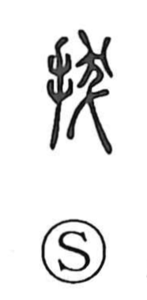

抜

Uncategorized
Kun: nuku, nukeru, nukasu, nukaru, toru | On: batsu, hatsu
to pull out ・ extract ・ remove ・ select for promotion ・ surpass
Explanation
A phono-semantic character, originally written 拔. The hand radical signals a manual act, while the accompanying element (given here as 灰), which bears the on reading hatsu and is associated with hair, suggests what is being grasped; together they depict pulling hair out by hand, hence the core meaning “to draw out.” Early lexica gloss it as drawing or bringing forth, and from that sense arise extensions such as selecting and advancing someone from among many (抜擢), removing or eliminating (拔除), excelling beyond the mass (抜群), excerpting selected passages (抜粋・抜萃), and removing a cause at its root (抜本).